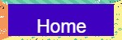
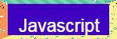

.jpg)
.jpg)
Final
|  |  | .jpg) |
.jpg) |
|---|
Games are activities that most people enjoy to amuse their entertainment. A “game” comes in many different forms from board games like Monopoly or Sorry, to team games like football and basketball, to videogames such as 2k or Call of Duty. As long as the game captures the attention of the intended audience, then you will have a successful game. When you first start out in the game you will first see the starting screen or splash scene of the game. This will contain the name of the game, the directions to the game, each of the creator’s bitmoji, and a start button to continue to the next screen. Once the “Start game” button is clicked, each of the options in the modified rock, paper, scissors will appear along with the computer score and the player score being recorded at the bottom of the screen. The goal of this game is to beat the computer in a game of rock paper scissors with special options added in as well. The game is best out of five or first one to three wins is victorious.